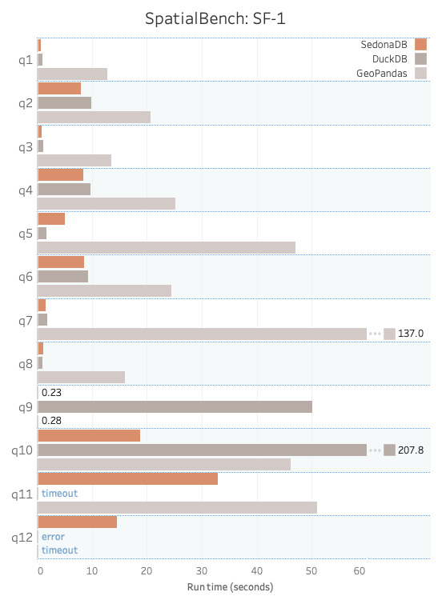
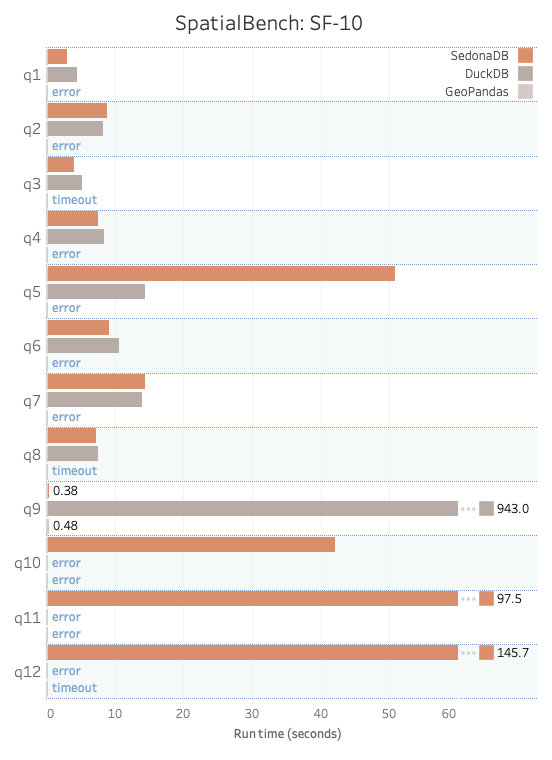

Introducing SedonaDB: A single-node analytical database engine with geospatial as a first-class citizen
The Apache Sedona community is excited to announce the initial release of SedonaDB! 🎉
SedonaDB is the first open-source, single-node analytical database engine that treats spatial data as a first-class citizen. It is developed as a subproject of Apache Sedona.
Apache Sedona powers large-scale geospatial processing on distributed engines like Spark (SedonaSpark), Flink (SedonaFlink), and Snowflake (SedonaSnow). SedonaDB extends the Sedona ecosystem with a single-node engine optimized for small-to-medium data analytics, delivering the simplicity and speed that distributed systems often cannot.
🤔 What is SedonaDB¶
Written in Rust, SedonaDB is lightweight, blazing fast, and spatial-native. Out of the box, it provides:
- 🗺️ Full support for spatial types, joins, CRS (coordinate reference systems), and functions on top of industry-standard query operations.
- ⚡ Query optimizations, indexing, and data pruning features under the hood that make spatial operations just work with high performance.
- 🐍 Pythonic and SQL interfaces familiar to developers, plus APIs for R and Rust.
- ☁️ Flexibility to run in single-machine environments on local files or data lakes.
SedonaDB utilizes Apache Arrow and Apache DataFusion, providing everything you need from a modern, vectorized query engine. What sets it apart is the ability to process spatial workloads natively, without extensions or plugins. Installation is straightforward, and SedonaDB integrates easily into both local development and cloud pipelines, offering a consistent experience across environments.
The initial release of SedonaDB provides a comprehensive suite of geometric vector operations and seamlessly integrates with GeoArrow, GeoParquet, and GeoPandas. Future versions will support all popular spatial functions, including functions for raster data.
🚀 SedonaDB quickstart example¶
Start by installing SedonaDB:
pip install "apache-sedona[db]"
Now instantiate the connection:
import sedona.db
sd = sedona.db.connect()
Let's perform a spatial join using SedonaDB.
Suppose you have a cities table with latitude and longitude points representing the center of each city, and a countries table with a column containing a polygon of the country's geographic boundaries.
Here are a few rows from the cities table:
┌──────────────┬───────────────────────────────┐
│ name ┆ geometry │
│ utf8view ┆ geometry <epsg:4326> │
╞══════════════╪═══════════════════════════════╡
│ Vatican City ┆ POINT(12.4533865 41.9032822) │
├╌╌╌╌╌╌╌╌╌╌╌╌╌╌┼╌╌╌╌╌╌╌╌╌╌╌╌╌╌╌╌╌╌╌╌╌╌╌╌╌╌╌╌╌╌╌┤
│ San Marino ┆ POINT(12.4417702 43.9360958) │
├╌╌╌╌╌╌╌╌╌╌╌╌╌╌┼╌╌╌╌╌╌╌╌╌╌╌╌╌╌╌╌╌╌╌╌╌╌╌╌╌╌╌╌╌╌╌┤
│ Vaduz ┆ POINT(9.5166695 47.1337238) │
├╌╌╌╌╌╌╌╌╌╌╌╌╌╌┼╌╌╌╌╌╌╌╌╌╌╌╌╌╌╌╌╌╌╌╌╌╌╌╌╌╌╌╌╌╌╌┤
And here are a few rows from the countries table:
┌─────────────────────────────┬───────────────┬────────────────────────────────────────────────────┐
│ name ┆ continent ┆ geometry │
│ utf8view ┆ utf8view ┆ geometry <epsg:4326> │
╞═════════════════════════════╪═══════════════╪════════════════════════════════════════════════════╡
│ Fiji ┆ Oceania ┆ MULTIPOLYGON(((180 -16.067132663642447,180 -16.55… │
├╌╌╌╌╌╌╌╌╌╌╌╌╌╌╌╌╌╌╌╌╌╌╌╌╌╌╌╌╌┼╌╌╌╌╌╌╌╌╌╌╌╌╌╌╌┼╌╌╌╌╌╌╌╌╌╌╌╌╌╌╌╌╌╌╌╌╌╌╌╌╌╌╌╌╌╌╌╌╌╌╌╌╌╌╌╌╌╌╌╌╌╌╌╌╌╌╌╌┤
│ United Republic of Tanzania ┆ Africa ┆ POLYGON((33.90371119710453 -0.9500000000000001,34… │
├╌╌╌╌╌╌╌╌╌╌╌╌╌╌╌╌╌╌╌╌╌╌╌╌╌╌╌╌╌┼╌╌╌╌╌╌╌╌╌╌╌╌╌╌╌┼╌╌╌╌╌╌╌╌╌╌╌╌╌╌╌╌╌╌╌╌╌╌╌╌╌╌╌╌╌╌╌╌╌╌╌╌╌╌╌╌╌╌╌╌╌╌╌╌╌╌╌╌┤
│ Western Sahara ┆ Africa ┆ POLYGON((-8.665589565454809 27.656425889592356,-8… │
├╌╌╌╌╌╌╌╌╌╌╌╌╌╌╌╌╌╌╌╌╌╌╌╌╌╌╌╌╌┼╌╌╌╌╌╌╌╌╌╌╌╌╌╌╌┼╌╌╌╌╌╌╌╌╌╌╌╌╌╌╌╌╌╌╌╌╌╌╌╌╌╌╌╌╌╌╌╌╌╌╌╌╌╌╌╌╌╌╌╌╌╌╌╌╌╌╌╌┤
Here’s how to perform a spatial join to compute the country of each city:
sd.sql(
"""
select
cities.name as city_name,
countries.name as country_name,
continent
from cities
join countries
where ST_Intersects(cities.geometry, countries.geometry)
"""
).show(3)
The code utilizes ST_Intersects to determine if a city is contained within a given country.
Here's the result of the query:
┌───────────────┬─────────────────────────────┬───────────┐
│ city_name ┆ country_name ┆ continent │
│ utf8view ┆ utf8view ┆ utf8view │
╞═══════════════╪═════════════════════════════╪═══════════╡
│ Suva ┆ Fiji ┆ Oceania │
├╌╌╌╌╌╌╌╌╌╌╌╌╌╌╌┼╌╌╌╌╌╌╌╌╌╌╌╌╌╌╌╌╌╌╌╌╌╌╌╌╌╌╌╌╌┼╌╌╌╌╌╌╌╌╌╌╌┤
│ Dodoma ┆ United Republic of Tanzania ┆ Africa │
├╌╌╌╌╌╌╌╌╌╌╌╌╌╌╌┼╌╌╌╌╌╌╌╌╌╌╌╌╌╌╌╌╌╌╌╌╌╌╌╌╌╌╌╌╌┼╌╌╌╌╌╌╌╌╌╌╌┤
│ Dar es Salaam ┆ United Republic of Tanzania ┆ Africa │
└───────────────┴─────────────────────────────┴───────────┘
The example above performs a point-in-polygon join, mapping city locations (points) to the countries they fall within (polygons). SedonaDB executes these joins efficiently by leveraging spatial indices where beneficial and dynamically adapting join strategies at runtime using input data samples. While many general-purpose engines struggle with the performance of such operations, SedonaDB is purpose-built for spatial workloads and delivers consistently fast results.
📊 Apache Sedona SpatialBench¶
To test our work on SedonaDB, we also needed to develop a mechanism to evaluate its performance and speed. This led us to develop Apache Sedona SpatialBench, a benchmark for assessing geospatial SQL analytics query performance across database systems.
Let's compare the performance of SedonaDB vs. GeoPandas and DuckDB Spatial for some representative spatial queries as defined in SpatialBench.
Here are the results from SpatialBench v0.1 for Queries 1–12 at scale factor 1 (SF1) and scale factor 10 (SF10).
 
SedonaDB demonstrates balanced performance across all query types and scales effectively to SF 10. DuckDB excels at spatial filters and some geometric operations but faces challenges with complex joins and KNN queries. GeoPandas, while popular in the Python ecosystem, requires manual optimization and parallelization to handle larger datasets effectively. An in-depth performance analysis can be found in the SpatialBench website.
Here’s an example of the SpatialBench Query #8 that works for SedonaDB and DuckDB:
SELECT b.b_buildingkey, b.b_name, COUNT(*) AS nearby_pickup_count
FROM trip t JOIN building b ON ST_DWithin(ST_GeomFromWKB(t.t_pickuploc), ST_GeomFromWKB(b.b_boundary), 0.0045) -- ~500m
GROUP BY b.b_buildingkey, b.b_name
ORDER BY nearby_pickup_count DESC
This query intentionally performs a distance-based spatial join between points and polygons, followed by an aggregation of the results.
Here's what the query returns:
┌───────────────┬──────────┬─────────────────────┐
│ b_buildingkey ┆ b_name ┆ nearby_pickup_count │
│ int64 ┆ utf8view ┆ int64 │
╞═══════════════╪══════════╪═════════════════════╡
│ 3779 ┆ linen ┆ 42 │
├╌╌╌╌╌╌╌╌╌╌╌╌╌╌╌┼╌╌╌╌╌╌╌╌╌╌┼╌╌╌╌╌╌╌╌╌╌╌╌╌╌╌╌╌╌╌╌╌┤
│ 19135 ┆ misty ┆ 36 │
├╌╌╌╌╌╌╌╌╌╌╌╌╌╌╌┼╌╌╌╌╌╌╌╌╌╌┼╌╌╌╌╌╌╌╌╌╌╌╌╌╌╌╌╌╌╌╌╌┤
│ 4416 ┆ sienna ┆ 26 │
└───────────────┴──────────┴─────────────────────┘
Here’s the equivalent GeoPandas code:
trips_df = pd.read_parquet(data_paths["trip"])
trips_df["pickup_geom"] = gpd.GeoSeries.from_wkb(
trips_df["t_pickuploc"], crs="EPSG:4326"
)
pickups_gdf = gpd.GeoDataFrame(trips_df, geometry="pickup_geom", crs="EPSG:4326")
buildings_df = pd.read_parquet(data_paths["building"])
buildings_df["boundary_geom"] = gpd.GeoSeries.from_wkb(
buildings_df["b_boundary"], crs="EPSG:4326"
)
buildings_gdf = gpd.GeoDataFrame(
buildings_df, geometry="boundary_geom", crs="EPSG:4326"
)
threshold = 0.0045 # degrees (~500m)
result = (
buildings_gdf.sjoin(pickups_gdf, predicate="dwithin", distance=threshold)
.groupby(["b_buildingkey", "b_name"], as_index=False)
.size()
.rename(columns={"size": "nearby_pickup_count"})
.sort_values(["nearby_pickup_count", "b_buildingkey"], ascending=[False, True])
.reset_index(drop=True)
)
🗺️ SedonaDB CRS management¶
SedonaDB manages the CRS when reading/writing files, as well as in DataFrames, making your pipelines safer and saving you from manual work.
Let's compute the number of buildings in the state of Vermont to highlight the CRS management features embedded in SedonaDB.
Start by reading in a FlatGeobuf file that uses the EPSG 32618 CRS with GeoPandas and then convert it to a SedonaDB DataFrame:
import geopandas as gpd
path = "https://raw.githubusercontent.com/geoarrow/geoarrow-data/v0.2.0/example-crs/files/example-crs_vermont-utm.fgb"
gdf = gpd.read_file(path)
vermont = sd.create_data_frame(gdf)
Let’s check the schema of the vermont DataFrame:
vermont.schema
SedonaSchema with 1 field:
geometry: wkb <epsg:32618>
We can see that the vermont DataFrame maintains the CRS that’s specified in the FlatGeobuf file. SedonaDB doesn’t have a native FlatGeobuf reader yet, but it’s easy to use the GeoPandas FlatGeobuf reader and then convert it to a SedonaDB DataFrame with a single line of code.
Now read a GeoParquet file into a SedonaDB DataFrame.
buildings = sd.read_parquet(
"https://github.com/geoarrow/geoarrow-data/releases/download/v0.2.0/microsoft-buildings_point_geo.parquet"
)
Check the schema of the DataFrame:
buildings.schema
SedonaSchema with 1 field:
geometry: geometry <ogc:crs84>
Let’s expose these two tables as views and run a spatial join to see how many buildings are in Vermont:
buildings.to_view("buildings", overwrite=True)
vermont.to_view("vermont", overwrite=True)
sd.sql(
"""
select count(*) from buildings
join vermont
where ST_Intersects(buildings.geometry, vermont.geometry)
"""
).show()
This command correctly errors out because the tables have different CRSs. For safety, SedonaDB errors out rather than give you the wrong answer! Here's the error message that's easy to debug:
SedonaError: type_coercion
caused by
Error during planning: Mismatched CRS arguments: ogc:crs84 vs epsg:32618
Use ST_Transform() or ST_SetSRID() to ensure arguments are compatible.
Let’s rewrite the spatial join to convert the vermont CRS to EPSG:4326, so it’s compatible with the buildings CRS.
sd.sql(
"""
select count(*) from buildings
join vermont
where ST_Intersects(buildings.geometry, ST_Transform(vermont.geometry, 'EPSG:4326'))
"""
).show()
We now get the correct result!
┌──────────┐
│ count(*) │
│ int64 │
╞══════════╡
│ 361856 │
└──────────┘
SedonaDB tracks the CRS when reading/writing files, converting to/from GeoPandas DataFrames, or when performing DataFrame operations, so your spatial computations run safely and correctly!
🎯 Realistic example with SedonaDB¶
Let's now turn our attention to a KNN join, which is a more complex spatial operation.
Suppose you're analyzing ride-sharing data and want to identify which buildings are most commonly near pickup points, helping understand the relationship between trip origins and nearby landmarks, businesses, or residential structures that might influence ride demand patterns.
This query finds the five closest buildings to each trip pickup location using spatial nearest neighbor analysis. For every trip, it identifies the five buildings that are geographically closest to where the passenger was picked up and calculates the exact distance to each of those buildings.
Here’s the query:
WITH trip_with_geom AS (
SELECT t_tripkey, t_pickuploc, ST_GeomFromWKB(t_pickuploc) as pickup_geom
FROM trip
),
building_with_geom AS (
SELECT b_buildingkey, b_name, b_boundary, ST_GeomFromWKB(b_boundary) as boundary_geom
FROM building
)
SELECT
t.t_tripkey,
t.t_pickuploc,
b.b_buildingkey,
b.b_name AS building_name,
ST_Distance(t.pickup_geom, b.boundary_geom) AS distance_to_building
FROM trip_with_geom t JOIN building_with_geom b
ON ST_KNN(t.pickup_geom, b.boundary_geom, 5, FALSE)
ORDER BY distance_to_building ASC, b.b_buildingkey ASC
Here are the results of the query:
┌───────────┬───────────────────────────────┬───────────────┬───────────────┬──────────────────────┐
│ t_tripkey ┆ t_pickuploc ┆ b_buildingkey ┆ building_name ┆ distance_to_building │
│ int64 ┆ binary ┆ int64 ┆ utf8 ┆ float64 │
╞═══════════╪═══════════════════════════════╪═══════════════╪═══════════════╪══════════════════════╡
│ 5854027 ┆ 01010000001afa27b85825504001… ┆ 79 ┆ gainsboro ┆ 0.0 │
├╌╌╌╌╌╌╌╌╌╌╌┼╌╌╌╌╌╌╌╌╌╌╌╌╌╌╌╌╌╌╌╌╌╌╌╌╌╌╌╌╌╌╌┼╌╌╌╌╌╌╌╌╌╌╌╌╌╌╌┼╌╌╌╌╌╌╌╌╌╌╌╌╌╌╌┼╌╌╌╌╌╌╌╌╌╌╌╌╌╌╌╌╌╌╌╌╌╌┤
│ 3326828 ┆ 01010000001bfcc5b8b7a95d4083… ┆ 466 ┆ deep ┆ 0.0 │
├╌╌╌╌╌╌╌╌╌╌╌┼╌╌╌╌╌╌╌╌╌╌╌╌╌╌╌╌╌╌╌╌╌╌╌╌╌╌╌╌╌╌╌┼╌╌╌╌╌╌╌╌╌╌╌╌╌╌╌┼╌╌╌╌╌╌╌╌╌╌╌╌╌╌╌┼╌╌╌╌╌╌╌╌╌╌╌╌╌╌╌╌╌╌╌╌╌╌┤
│ 1239844 ┆ 0101000000ce471770d6ce2a40f9… ┆ 618 ┆ ivory ┆ 0.0 │
└───────────┴───────────────────────────────┴───────────────┴───────────────┴──────────────────────┘
This is one of the queries from SpatialBench.
🦀 Why SedonaDB was built in Rust¶
SedonaDB is built in Rust, a high-performance, memory-safe language that offers fine-grained memory management and a mature ecosystem of data libraries. It takes full advantage of this ecosystem by integrating with projects such as Apache DataFusion, GeoArrow, and georust/geo.
While Spark provides extension points that let SedonaSpark optimize spatial queries in distributed settings, DataFusion offers stable APIs for pruning, spatial operators, and optimizer rules on a single node. This enabled us to embed deep spatial awareness into the engine while preserving full non-spatial functionality. Thanks to the DataFusion project and community, the experience was both possible and enjoyable.
⚖️ Why SedonaDB and SedonaSpark are Both Needed¶
SedonaSpark is well-suited for large-scale geospatial workloads or environments where Spark is already part of your production stack. For instance, joining a 100 GB vector dataset with a large raster dataset. For smaller datasets, however, Spark's distributed architecture can introduce unnecessary overhead, making it slower to run locally, harder to install, and more difficult to tune.
SedonaDB is better for smaller datasets and when running computations locally. The SedonaDB spatial functions are compatible with the SedonaSpark functions, so SQL chunks that work for one engine will usually work for the other. Over time, we will ensure that both project APIs are fully interoperable. Here's an example of a chunk to analyze the Overture buildings table that works for both engines.
nyc_bbox_wkt = (
"POLYGON((-74.2591 40.4774, -74.2591 40.9176, -73.7004 40.9176, -73.7004 40.4774, -74.2591 40.4774))"
)
sd.sql(f"""
SELECT
id,
height,
num_floors,
roof_shape,
ST_Centroid(geometry) as centroid
FROM
buildings
WHERE
is_underground = FALSE
AND height IS NOT NULL
AND height > 20
AND ST_Intersects(geometry, ST_SetSRID(ST_GeomFromText('{nyc_bbox_wkt}'), 4326))
LIMIT 5;
🚀 Next steps¶
While SedonaDB is well-tested and provides a core set of features that can perform numerous spatial analyses, it remains an early-stage project with multiple opportunities for new features.
Many more ST functions are required. Some are relatively straightforward, but others are complex.
The community will add built-in support for other spatial file formats, such as GeoPackage and GeoJSON, to SedonaDB. You can read data in these formats into GeoPandas DataFrames and convert them to SedonaDB DataFrames in the meantime.
Raster support is also on the roadmap, which is a complex undertaking, so it's an excellent opportunity to contribute if you're interested in solving challenging problems with Rust.
Refer to the SedonaDB v0.2 milestone for more details on the specific tasks outlined for the next release. Additionally, feel free to create issues, comment on the Discord, or start GitHub discussions to brainstorm new features.
🤝 Join the community¶
The Apache Sedona community has an active Discord community, monthly user meetings, and regular contributor meetings.
SedonaDB welcomes contributions from the community. Feel free to request to take ownership of an issue, and we will be happy to assign it to you. You're also welcome to join the contributor meetings, and the other active contributors will be glad to help you get your pull request over the finish line!
Info
We’re celebrating the launch of SedonaDB & SpatialBench with a special Apache Sedona Community Office Hour!
📅 October 7, 2025
⏰ 8–9 AM Pacific Time
📍 Online